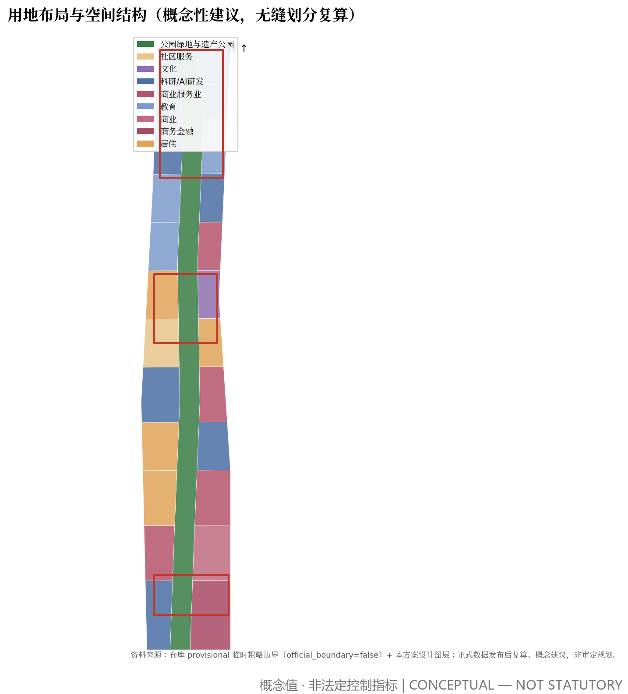
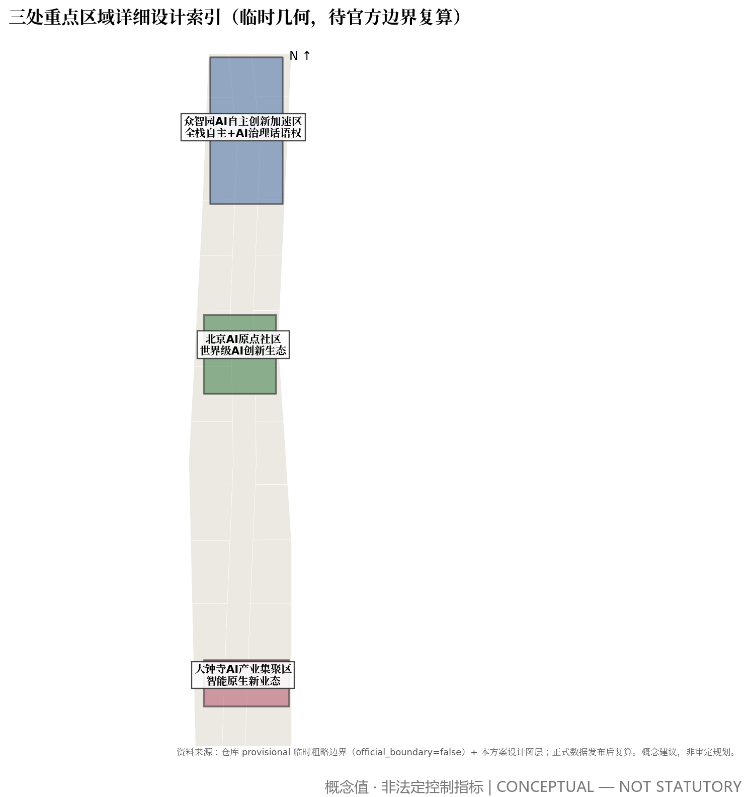
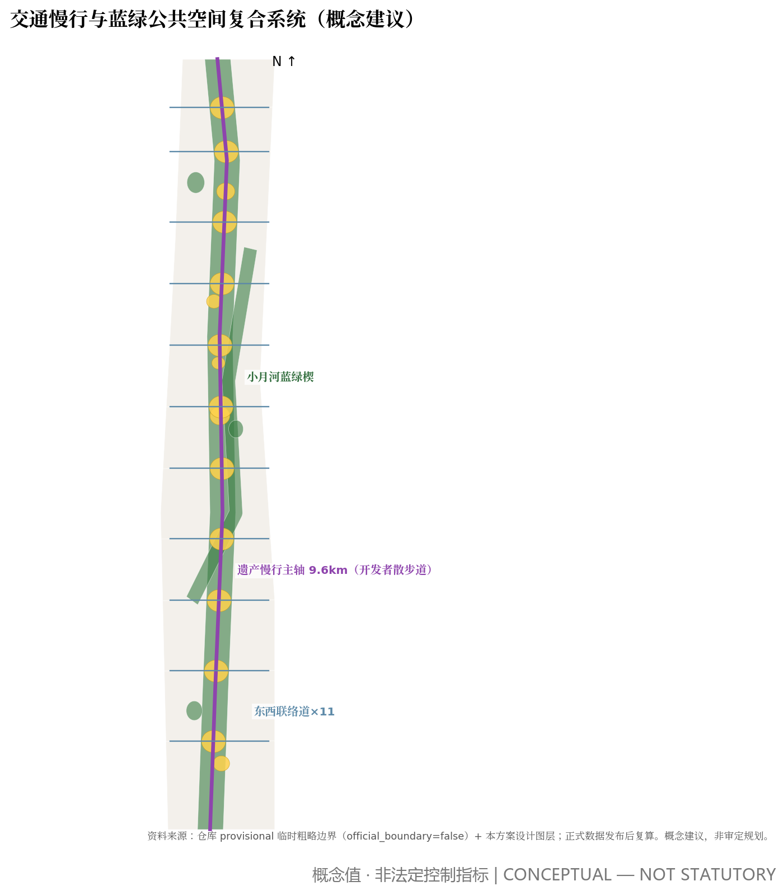
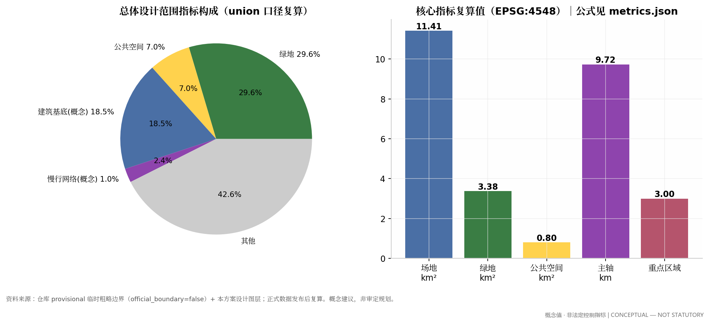

百年闭环·AI原点：京张源点城市设计方案
以'百年闭环·AI原点'为总概念，把1909年自主铁路的工程精神转译为AI时代的城市原点：方案以'未来社会判断'（AI对劳动力、社会结构与社会环境的改造）为社会学底座，以双情景纪律与双总图回应极化风险，以营造法式把判断落成生成规则；一条遗产慢行主轴缝合三区两翼，一套'百年驿站'公共空间体系承载AI场景与荣誉展示，全部指标在EPSG:4548下从提交几何复算。
百年闭环·AI原点：京张源点城市设计方案
主名称：京张源点（Jing-Zhang Origin）。副题：百年闭环 · AI原点。本方案是一份概念性城市设计建议，供征集组织方与专业团队深化研究，不构成法定规划、审批结论或实施承诺 来源 标准。
未来设想：AI 时代的劳动力、社会结构与社会环境（设计的社会学底座）
本方案的全部空间判断建立在一层明确的社会学底座之上：先回答"AI 充分接入后社会怎么变、人为什么还聚集、城市为谁而建"，再谈形态。没有这一层，AI 城市设计只是技术布景 来源。
历史纵轴：每一次生产力革命都重写社会结构、聚集逻辑与城市形态。 第一次（蒸汽/铁路）带来工厂制与二元阶级分化，人为机器聚集，工业城市与现代规划由此诞生；第二次（电力/汽车）带来大规模生产与白领阶层，人为岗位聚集，功能分区与郊区化出现；第三次（计算机/互联网）带来知识经济与创意阶层，人为知识聚集，创新城区与混合用途回摆；第四次（AI/机器人）将带来智能生产，其社会结构、聚集逻辑与城市形态，正是本方案要判断、回答与设计的对象。三条规律支撑这一章：①聚集的理由每代都换——"为工作聚集"瓦解之后，人为什么还聚在城市，是根本问题；②每次革命先造城市病、再生城市思想——第四次的"未病"是就业极化的空间化；③形态转向历来滞后技术数十年——AI 城市的价值在于第一次"同步设计" 来源。
学术共识（2026-08 检索，严格区分实证事实、学理推断、愿景情景三级）。 ①替代效应是实证事实：自动化对岗位与工资的替代已被反复验证（Acemoglu & Restrepo 2020, JPE；Acemoglu et al. 2022, JOLE：新任务创造不足以弥补替代）。②就业极化是结构性的：中等技能岗位加速消失并从中间任务向两端扩展（Acemoglu & Loebbing 2026），收入格局向"纺锤型"恶化。③极化有地理分布：AI 职业脆弱性在城市间差异显著（Yang & Kim 2024, Annals of Regional Science），中国 AI 发展空间高度集聚（Xia et al. 2026, The Professional Geographer）——极化的空间化正是设计可干预的环节。④分配中心转移：劳动收入份额下降（Restrepo 2024），后工作哲学要求"生产性正义"——贡献机会与承认的公平分配（Althorpe & Finneron-Burns 2024, Journal of Applied Philosophy）；由此得出本方案的核心主张之一：公共品即红利——高品质免费公共空间是 AI 红利的实物分配形式。⑤AI 城市主义已成学术范畴（Cugurullo et al. 2024, Urban Studies）：AI 正从城市治理工具变为重塑空间与日常的力量，数据与算法治理受可解释性与合法性约束（Yigitcanlar et al. 2025）。⑥诚实边界：企业层面自动化可与就业正相关（Aghion et al. 2023）；"后稀缺社会"是愿景不是实证（Hines 2019）——本方案把它作为严肃规划情景对待，而不是写成事实 来源。
三变三不变（判断的压缩形式）。 三变：非劳动时间成为城市生活主体；技能重组终身化，身份从"职业"转向"作品与贡献"；极化风险使"相遇"从自发变为需要设计。三不变（城市为人之本）：人是具身的——面对面相遇、身体与自然不可替代；人需要被需要——意义来自真实贡献与承认；人需要归属——地方根脉是心理刚需。京张源点的一切空间动作，都在为三变提供容器、为三不变提供场所。
五个空间命题（社会判断 → 设计任务书）。 ①非劳动时间成主体 → 从通勤机器到以公共生活为主结构的生活城市：本方案把第三场所升级为骨架——约 9.6 公里遗产慢行主轴与 11 处百年驿站构成全天候公共生活底座 空间数据 指标。②终身技能重组 → 从学校围墙到弥散式学习网络：驿站与院落街坊嵌入 5 分钟可达的学习节点，学习被基础设施化。③职业身份转向贡献身份 → 从纪念碑式到日常化的创造与承认场所：智能体贡献荣誉墙、开源成果展示廊与原点碑构成"承认的空间化"，让贡献被看见、被铭刻 来源。④极化风险 → 从市场自发分异到空间结构强制缝合：跨圈层相遇设计——共用驿站、混合街坊、保障性住房比例保留与防绅士化机制，让不同收入与技能人群共享同一套公共空间 空间数据。⑤分配渠道多元化 → 公共空间即 AI 红利的实物分配：最高品质的免费空间沿主廊布置，绿地比例复算值 29.6%、公共空间比例 7.0%，把技术红利落成人人可享的日常 指标 指标。
双情景纪律与双总图。 情景 A（极化持续、工作仍是主体）与情景 B（劳动时间大幅缩短、后劳动社会）必须同时成立：同一套空间结构，在 A 下是"极化缓冲器"，在 B 下是"新生活骨架"。每个空间动作自检一句"这个设计在两个情景下分别是什么"，答不上来的动作不做。本方案以"双总图"表达这一纪律：同一形态、两套命运图例——情景 A（平台持有、广告侵入、驿站变门店、传感全覆盖）与情景 B（社区基金持有、檐廊社交、照护簇、嵌线暖光）。形态完全相同，命运完全不同——差别不在技术，在分配 来源。

愿景的判别与宗旨。 愿景价值 = 概念第一性深度 × 规则可执行性 × 治理正当性 ÷ 尺度野心。一切判断与设计服从一条宗旨：让城市真正为了人、服务于人——技术是布景，公共生活是主角；AI 是工具，人的相遇、创造与归属是目的 来源。
原创机制一览
本方案面向"AI×城市"提出的原创概念与机制集中索引（全部为概念建议，正文有完整论述）：
| # | 原创机制（概念） | 一句话 | 正文位置 |
|---|---|---|---|
| 1 | 百年闭环·AI原点总概念 | 让第四次技术革命的城市形态从第一次自主工程的原点生长出来 | 统筹研究范围 |
| 2 | 未来社会判断五命题 | 社会学底座直接转译为设计任务书，判断先行、形态随后 | 未来设想 |
| 3 | 双情景纪律与双总图 | 同一形态两套命运：A 下是极化缓冲器，B 下是新生活骨架 | 未来设想 |
| 4 | 京张环 | 绿廊慢行弦+轨交弧构成闭环，快慢双系统、双路径率 100% | 交通 |
| 5 | 城市即试验场 | 分级测试位×社区基金收费×≥50% 反哺，区位红利直接变现 | 长期运营 |
| 6 | 数字原型循证 | 干预前后步行仿真直接修正均质化设计假设 | 指标体系 |
| 7 | 营造法式生成规则 | 八原则、五级语法、五步路径，规则即交付物 | 营造法式 |
| 8 | 承认的空间化 | 荣誉墙、展示廊、原点碑：贡献身份的日常化场所体系 | 未来设想命题③ |
| 9 | 色彩与夜景宪法 | 高饱和色由导视与承认系统垄断，亮度随高度递减 | 蓝绿与风貌 |
| 10 | 1.5 钥匙单元与照护簇 | 收入波动应答与再生产劳动显形的建筑形式 | 营造法式 |
| 11 | 场景开放备案制与数据三分类 | AI 场景全生命周期治理：在持续辩护中临时存在 | AI 治理机制 |
十一项机制覆盖智能体任务 agent.1–agent.6 的输出要求，与合规矩阵逐条映射一致 来源。
设计依据与资料清单
本方案建立在四层资料之上。第一层是官方公开文件：北京市规划和自然资源委员会海淀分局的资格预审公告给出了三层范围、三处重点区域和面积口径（43.6/11.4 平方公里与 368.4 公顷），是本方案唯一的法定事实基础 来源。第二层是仓库场地包与智能体任务书，提供枚举、区间、schemas 与六项智能体任务 来源 来源。第三层是公开资料登记表，用于区分可用等级：本方案只把 official_public 与 user_provided_cleared 资料用于正式主张，背景资料只作背景 来源。第四层是公开文献中的全球 AI 创新生态案例，仅作范式参考，不作统计事实 来源。
必须如实声明的资料缺口：官方精确边界 polygon 尚未发布，本方案使用仓库临时粗略边界（provisional rough），全部面积为低置信度临时复算值，待正式数据补齐后重算 空间数据。容积率、建筑高度、建筑密度、退线等法定控制条件同样待正式数据补齐，在指标体系中保持 unknown 并说明原因 来源。现状建筑、权属、市政承载与工程条件未获得清权资料，相关结论一律写作待确认事项。

三层范围工作框架
三层范围构成"战略—设计—实施"的逐级落实链条。统筹研究范围约 43.6 平方公里（北至北五环、东至京藏高速、南至西直门外大街、西至万泉河路），承担产业与未来城市研究，成果形式为战略与协同框架，不落到地块 来源。总体设计范围约 11.4 平方公里，是本案城市设计的主战场，达到控规深度城市设计：空间结构、用地布局、更新策略、指标复算均在这一层完成 空间数据 指标。重点区域约 368.4 公顷，自北向南为众智园 AI 自主创新加速区（约 192.1 公顷）、北京 AI 原点社区（约 104.3 公顷）、大钟寺 AI 产业集聚区（约 72.0 公顷），达到规划综合实施方案深度 空间数据 深度。
临时边界的使用限制在此明确：当前提交的几何是仓库 provisional 文件派生的粗略范围，不是官方红线，不能用于精确面积主张；本方案所有图层都以它作为临时复算基底，官方 polygon 发布后，用地划分、绿地与公共空间比例、分期面积将全部自动重算（复算路径与触发条件见假设清单）空间数据 指标。

统筹研究范围产业与未来城市研究
总体概念：百年闭环·AI原点。 1909 年詹天佑主持修建的京张铁路，是中国人自主工程的原点；2019 年京张智能高铁在同一走廊通车；本方案建议把这条走廊确立为"AI 城市原点"——让第三次技术革命的城市形态，从第一次自主工程的原点生长出来，构成百年闭环。这不是怀旧叙事，而是产业判断：AI 时代的创新仍然高度依赖面对面的高密度交往，43.6 平方公里的统筹范围应当被组织为"一条创新主廊 + 三区两翼"的协同回路，而不是分散园区的集合 来源 来源。
三大定位（百年京张文化带、都市 AI 生活体验带、AI 融合创新带）被转译为三条可建设的空间线索：文化带落在遗产公园与驿站体系，体验带落在慢行主轴与场景节点，创新带落在三区两翼的产业空间供给。五大功能（AI 全栈自主创新体系、世界级 AI 创新生态、AI+ 场景赋能新范式、智能化 AI 活力城市、AI 治理全球话语权）分别锚定众智园、原点社区、小月河翼、全带公共空间与众智园治理实验场 来源。
命名与视觉识别（任务 agent.1）。 主名称"京张源点 / Jing-Zhang Origin"：京张锚定百年文脉与场地唯一性，源点同时指历史原点、创新原点与坐标原点（0,0），三层含义都经得起国际传播。命名体系为"源点 + 序列"：一带称京张源点，主轴称源点大道（开发者散步道），节点称百年驿站 01–11，地标称原点碑系列。Logo 方向建议：以"人字轨"几何为基本形——詹天佑人字形铁路的抽象折线，既是铁轨也是向上的箭头，又是代码中的"^"符号；主色建议"铁轨青灰 + 火花橙"双色系统，字体建议开源可商用的思源黑体/思源宋体组合，确保全球清权使用。视觉识别与文化导视系统分层管理，互不混淆 来源。
全球案例研究（任务 agent.2，6 个）。 ①多伦多 Sidewalk Labs 的教训：数据治理不透明导致项目终止，本案所有场景卡因此强制附数据治理说明。②丰田 Woven City：把城市作为"活的测试场"，对应本案测试验证场景与三区产业测试功能。③伦敦 Kings Cross–Knowledge Quarter：大学锚点先行带动 67 英亩铁路棕地再生，对应原点社区"高校—遗产—企业"的锚点策略。④蒙特利尔 Mila 生态：研究机构—初创—资本的半径一公里圈层，对应众智园全栈体系的空间聚集逻辑。⑤深圳湾科技生态园：高密度混合用地支撑全时段活力，对应大钟寺智能原生业态。⑥哥本哈根指状绿廊：基础设施廊道转型公共脊柱的百年运营经验，对应遗产公园的长期运营机制 来源 标准。
生态图谱与要素机制（概念建议）。 建议以"基础研究（高校与研究院）—孵化加速（众智园）—场景验证（小月河翼与全带测试场景）—资本服务（中关村翼）—治理实验（AI 治理沙盒）"五环构成海淀 AI 生态图谱；土地、空间、资金、人才、算力、数据、场景七类要素各配空间载体与运营机制，全部写作供专业团队深化的方向，不作招商与政策承诺 来源 深度。
总体设计范围城市更新与控规深度城市设计
空间结构：一脊、两翼、三区、多节点。 一脊是沿老京张线位意向的遗产慢行主轴（约 9.6 公里，复算值），串联北京北—西直门方向至清河方向；两翼是主轴东西两侧的城市更新片区；三区即三处重点区域；多节点是 11 处"百年驿站"广场序列与 5 处主题广场 空间数据 指标。用地布局采用无缝分区：科研与 AI 研发用地约 2.81 平方公里占 24.6%，公园绿地约 2.92 平方公里占 25.6%，商业服务业约 2.59 平方公里，居住与社区服务约 1.87 平方公里，教育约 0.97 平方公里，文化约 0.25 平方公里，全部由同一基底划分并复算，无重叠无缺口 空间数据 指标 深度。
更新策略。 以"留改拆增"分类建立更新框架：遗产要素与既有高校一律保留修缮；1990 年代后低效产业用房建议改造为研发与测试空间；极少量与结构冲突的棚户与临建列为拆除候选（具体拆改留结论必须待权属与现状调查清权资料补齐后由专业团队确认）；新建量集中于众智园与大钟寺两个增长极。开发强度、容积率与高度控制全部待正式控规条件补齐，本方案只给出形态意向：沿主轴"面状谦逊"（多层院落式研发街坊，建议 18–24 米轮廓），地标"点状高耸"（仅在三区核心各设一处标志物，高度意向待航空、景观与文保约束确认）深度 深度。
创新指标体系思路。 建议以"AI 创新指数"整合人才密度、场景开放度、测试验证频次、公共空间使用率四类可观测指标，替代单一产值口径；国土空间规划创新点在于把"场景"作为一种新型空间供给写入用地兼容规则，供综合规划研究深化 来源。
重点区域详细设计
三处重点区域构成"北研发—中社区—南商业"的功能链，全部由主轴缝合 空间数据。
众智园 AI 自主创新加速区（约 192.1 公顷，临时几何）。 定位 AI 全栈自主创新体系与 AI 治理全球话语权：建议组织"芯片—框架—模型—应用"全栈研发街坊群，中心设"开源市集广场"与治理沙盒展示馆；建筑以多层院落式研发街坊为主，保留点状标志塔意向一处；慢行上接入主轴北段与 3 条东西联络道；AI 场景以测试验证为主（低速无人配送测试段、端侧算力微网试点）；实施风险集中在权属整合与高校协同，列为待确认事项 空间数据 深度。
北京 AI 原点社区（约 104.3 公顷，临时几何）。 定位世界级 AI 创新生态的"生活底盘"：高校—社区—遗产三位一体，原点广场为核心，周边布置人才公寓、社区服务与联合办公混合街坊；清华园车站旧址纪念广场承载历史锚点，荣誉墙广场承载 Agent 贡献展示；慢行上是主轴最宽段与驿站 05–08 的密集区；风险在于防绅士化，建议保留一定比例保障性住房与社区商业，具体比例待专项研究 空间数据。
大钟寺 AI 产业集聚区（约 72.0 公顷，临时几何）。 定位智能原生新业态：建议在大钟寺商业既有基础上植入"AI 原生消费实验室"（无人零售试验店、机器人服务街区、沉浸式 AI 展廊），智能生活广场为引爆点；商务金融用地承载企业总部与资本服务接口；交通上强化与地铁大钟寺站的一体化换乘意向（工程可行性待专业论证）；风险在于商业更新与既有商户协同 空间数据。

AI 创新生态、人才画像与 AI+ 场景
五类用户画像（任务 agent.3）。 ①AI 研究者/工程师（28–40 岁，高校与企业实验室，需要安静深度工作空间+非正式交往场所+夜间活力）；②创业者与独立开发者（需要低成本联合办公、测试场景入口、资本对接）；③在地居民（原有社区，需要就业转化、服务提升、不被挤出的居住保障）；④高校师生（北航北邮等，需要产学转化界面与青年友好公共空间）；⑤访客与全球开发者（朝圣动线、可感知的 AI 体验、荣誉体系的参与感）。五类画像的空间诉求分别映射到研发街坊、孵化空间、更新社区、高校界面与主轴体验带 来源 标准。
十张 AI 场景卡（每张绑定空间、数据治理与运营；另有 3 张测试验证场景卡单独标注）。
- SCN-01 遗产导览智能体：在京张遗产公园主轴提供多语种 AR 导览；空间=主轴全线与 11 驿站；数据=位置与导览内容，匿名化聚合，游客可退出；运营=公园运营方+高校志愿团队。
- SCN-02 慢行交通协同：主轴与联络道的行人—骑行—低速无人车分时共享；空间=RD-001 及 11 条联络道；数据=匿名流量计数，不设人脸采集；人工复核=交管联席机制。
- SCN-03 社区健康导航：原点社区为居民提供 AI 健康预检与挂号导航；空间=0702 社区服务地块；数据=医疗敏感数据本地化处理、最小采集、居民明示授权；人工复核=社区卫生服务机构。
- SCN-04 联合办公智能撮合：众智园与原点的共享工位、会议室、设备按需撮合；空间=孵化街坊；数据=企业授权数据；运营=园区运营公司。
- SCN-05 机器人末端配送：大钟寺与原点社区的低速配送机器人示范；空间=指定慢行断面；数据=路径与订单匿名化；安全冗余=人工接管站。
- SCN-06 遗产公园环境微调节：驿站小气候感应与喷雾/遮阳联动；空间=11 驿站；数据=环境传感，无个人信息。
- SCN-07 开源成果展示廊：主轴沿线的开源项目实体展示与扫码体验；空间=展示廊与荣誉墙广场；数据=展示内容经作者授权；运营=开发者社区自治委员会概念。
- SCN-08 企业服务副驾：为园区企业提供政策匹配、空间选址与合规问答的概念服务；空间=中关村服务翼接口；数据=企业公开信息；边界=不替代行政审批。
- SCN-09 公共安全运行复核：人流聚集预警与应急疏散辅助；空间=三区核心广场；数据=匿名视频结构化、30 天留存上限、人工复核前置；红线=不设个人识别。
- SCN-10 夜间活力运营：主轴夜间灯光叙事与文化活动智能排期；空间=主轴与驿站；数据=活动报名匿名化；目标=全时段活力与安全平衡。
三个 AI 产业测试验证场景（任务 agent.3 硬指标）： T-01 低速无人系统开放测试段（众智园—原点社区间指定断面，牌照与保险机制待主管部门确认）；T-02 端侧算力微网与分布式能源试点（众智园街坊级，并网方案待电力专项）；T-03 AI 治理沙盒（算法备案体验、公众审议流程的可视化实验，与众智园治理展示馆联动）。三者均为测试验证概念，不写成已批准运营 来源 深度。
场景—空间—运营映射原则： 每张场景卡必须同时回答"落在哪里、谁使用、谁运营、采什么数据、如何退出"，缺少任何一项不得进入实施项目清单；隐私边界与人工复核是场景成立的先决条件，而非附加说明。
用地、建筑规模与拆改留方案
用地无缝分区共 25 个地块：科研/AI 研发 9 块、商业服务业 7 块、居住 4 块、教育 3 块、文化 1 块、公园绿地 1 块（遗产公园整体计一块），全部从同一基底切割派生，拓扑零重叠零缺口（复算口径）空间数据 深度。建筑基底以概念体量估算：617 个体量总基底约 210.7 万平方米（占总体设计范围的 18.5%，作为空间供给量级参考），按平均 6 层假设的概念总建筑量约 1264 万平方米——这是低置信度设计量，用于讨论空间供给能力，不等于法定开发强度 指标 指标。
拆改留分类逻辑：保留类=遗产要素、高校、优质现状建筑；改造类=低效产业用房与老旧商业（众智园、大钟寺为主）；拆除候选=与主轴和结构冲突的零星临建（须权属调查确认）；新建类=两增长极与原点社区人才公寓。高度与体量意向遵循"面状谦逊、点状高耸"：街坊 18–24 米为主，三区各一处标志物，具体高度待航空、文保、景观视廊等约束确认 深度 深度。所有容积率、建筑密度、退线指标保持待正式数据补齐状态，本方案不作任何法定口径承诺 来源。
营造法式：判断落地的生成规则
未来构想不是被"建成"的，而是在一套法式下被"养大"的。本方案把落地纪律写成可执行的生成规则——提交的终点不是图纸而是规则，图纸只是规则的实例 来源。
八条落地原则（不可违反）。 P1 判断先行：任何空间动作必须能回溯到"生产结构→时间结构→空间需求"因果链的某一环，回溯不到的动作不做。P2 双情景保险：每个设计决定在情景 A/B 下同时成立，只在单一情景下成立的标注为期权而非承诺。P3 生长而非蓝图：最小可建单元先行（一座驿站、一个单翼、半座院落均可独立成立），未完成态合法。P4 规则即交付物：图则参数、生成器与动作库才是终点，机器可校验是底线。P5 支撑体与填充体分离：图则只控制结构、檐口、界面与院落几何，功能、材质与细部留给使用者与时间。P6 遗存清单先于概念：概念必须长在遗存上，阻隔构件优先翻转为连接构件而非清除。P7 治理可辩护：凡涉数据、平台与增值分配，先写治理主体与分配规则再画空间；分配机构（社区基金、数据信托、照护设施）必须获得建筑形式——只画空间不写治理判不合格。P8 循证闭环：每条核心映射挂可测指标，基线—干预对比，验收用数据说话（数字原型见指标体系章）。
五级生成法则。 G1 结构法则：一环一脊、两带、多细胞、点峰——檐口基准带 70 米内不超过 18 米，过渡带 70–150 米不超过 24 米、150–300 米不超过 50 米；塔楼只在站点院落内，按 60/80/100 米分级，占地不超过 25%、面宽不超过 40 米、与相邻高差不小于 3 层。G2 模数法则：一切尺寸从四个母数派生——1435 毫米轨距（时间模数）、8.4 米通用层柱网（可改建模数）、60–90 米院落细胞（日照下限与邓巴数社会上限的交集）、18 米檐口基准（木构甜区×街道眼上限×隐含碳拐点）；说不清与母数关系的尺寸不用。G3 变奏法则：细胞复制但翼楼层数 ±1–2 层错动并向站点渐高，一院一辅色取自该院工坊产业色，院落开口朝向随穿越通道位置翻转；禁止两次以上完全相同的复制——差异由规则参数产生，不由设计师随手产生。G4 界面法则：无背面（四面可开口，设备入地或入芯）、0–2.4 米叙事带、地面层 100% 可进入公共功能、临廊道贴线率不低于 65%、朝向绿廊一侧 3 米连续檐廊。G5 时间法则：每份图则标注 2028/2035/2045 三态，绿廊断面一次设计分期让渡（首期 1/3），依赖不确定技术的动作一律为期权并配触发条件 来源。
居住与照护应答（社会判断的建筑形式）。 居住应答收入波动：建议 1.5 钥匙单元不低于 50%、面积 45–90 平方米，过渡性住房 20% 由社区基金持有。照护作为基础设施而非配套：每个院落细胞东南角地面层设托育与日间照料 400–800 平方米、服务半径不超过 150 米——再生产劳动（照护、育儿、做饭）必须在空间显形，这是双情景纪律在居住层的直接落地，比例与服务半径均为概念建议值 来源 来源。
五步落地路径。 ①普查定遗存（段落遗存清单与权属图谱）→ ②图则定规则（类型配比、高度、贴线、最小可建单元、治理条款、三态标注）→ ③生成定形态（生成器按图则批量生成体量并机器校验）→ ④分期定先后（驿站与绿廊首期——便宜、快、聚人；院落细胞二期；塔楼视共识三期，每期独立成立）→ ⑤运营定反馈：验收指标实测——站点院落工作日/周末人流比 0.8–1.2、非消费停留覆盖不低于 60%、照护服务半径不超过 150 米、1.5 钥匙单元不低于 50%——不达标项回到第②步改图则。图则是活的，指标是它的编辑器 深度。
AI 治理机制：全生命周期备案、数据三分类与人工复核
愿景判别式中"治理正当性"在分子而不在分母：AI 场景堆得再多，治理不可辩护即一票否决。本章把分散在营造法式 P7、场景卡数据治理与测试验证 T-03 中的治理承诺，整合为一套可操作的机制（概念建议，供主管部门与专业团队深化）来源 来源。
场景开放备案制（全生命周期）。 凡进入公共空间的 AI 场景按"申请—备案—监测—评估—退出"五步管理：申请阶段场景卡必须答全五问（落在哪里、谁使用、谁运营、采什么数据、如何退出）；备案阶段向主管部门与社区双备案、公开可查——备案不是审批通过，而是留下完整责任链；监测阶段运行数据按数据分类留痕，季度公开运行摘要；评估阶段每年一次第三方评估叠加公众审议（T-03 治理沙盒转为常设公众界面）；触发红线（数据类别越界、人工复核缺位、投诉率超阈值）即启动整改或退出。场景不是"获批后永久存在"，而是"在持续辩护中临时存在"。
数据三分类治理。 开放数据：匿名聚合统计（流量计数、环境传感、活动热度），默认公开，汇入开放数据年报；受限数据：个人相关或商业敏感（健康预检、订单路径、工位撮合），明示授权、最小采集、本地化处理、留存上限（如 SCN-09 的 30 天），由数据信托托管审计；禁止数据：人脸识别、生物特征、个人行为画像，不采集、不存储、不设技术入口——LED 广告屏禁令与夜景克制即此分类的视觉表达。每张场景卡在卡面显著位置标注数据类别，类别升级须重新备案。
人工复核委员会与申诉通道。 治理主体建议为三层：主管部门（法定监管）、社区委员会（居民代表+高校+运营方，对场景准入与退出持有一票）、数据信托（受限数据托管与审计，与社区委员会双签测试准入）；人工复核前置写入自动化场景（SCN-02 交管联席、SCN-03 社区卫生服务机构、SCN-05 人工接管站制度化），任何自动化决策保留人工申诉与接管通道。Sidewalk Toronto 的教训是治理不透明足以终止项目——本方案把治理机制写成与空间方案同等深度的交付物 来源。
交通、轨道、市政与公共服务设施
交通组织的核心主张是把"移动"还给慢行：主轴 9.6 公里为步行+骑行+低速无人车分时共享的线性公园道，11 条东西联络道缝合两侧片区，形成"一轴十一横"的慢行网络（概念线位，不代表道路红线）空间数据 深度。
京张环：从一条绿廊到一个闭环。 13 号线与京张廊道近乎平行（西直门—五道口—上地—清河），廊道从来不是孤线，而是现存轨交环上的一根弦。本方案把网络结构从"一条绿廊"升级为"京张环"：绿廊（慢行弦）+ 13 号线/昌平线（轨交弧）构成闭环——廊道任一段因施工、活动或应急中断时，环提供永远存在的另一条路，回应线性拓扑的脆弱性；绿廊站点与轨交站点错位互补（五道口两线合一、六道口/学知园为廊道独有），形成"快慢双系统"。结构法则相应升级为"一环一脊"：环是韧性层，脊是生活层；环上任两点双路径率按 100% 控制（概念网络，非道路红线）来源 深度。轨道一体化意向：西直门/北京北、大钟寺、五道口/六道口方向站点与主轴节点以风雨连廊与地下连通意向衔接，工程可行性待专业论证。停车策略建议外围截流+核心区共享，非机动车在每处驿站配置智能停放点。

市政与新型基础设施融合建议：端侧算力柜入街坊级设备间、分布式能源与雨水系统入地、感知设施附着于驿站构筑物，实现"地面让人、地下让机器" 深度。公共服务设施按 15 分钟生活圈意向在校核居住与研发人口后配置（人口测算待正式数据补齐）来源。

蓝绿空间、公共空间与城市风貌
蓝绿骨架为"一廊一楔多点"：遗产公园线性绿廊约 2.66 平方公里，小月河蓝绿楔约 0.28 平方公里，三处口袋公园与 16 处广场节点构成公共空间系统；绿地比例复算值 29.6%，公共空间比例 7.0% 指标 指标 深度。风貌控制意向：总体灰调院落基调呼应北京老城谱系，主轴构筑物用"铁轨青灰+火花橙"的识别色，屋顶以坡顶与露台混合；遗产为视觉锚点，任何新建体量不得压过清华园车站旧址方向的历史轮廓（意向性控制，待景观视廊专项确认）。
AI 朝圣地标体系（任务 agent.4，3+1 处）： ①原点碑（Origin Marker）：原点广场上的百年闭环纪念装置，铭刻 1909/2019/2026 三个年份与征集贡献者名录意向；②智能体贡献荣誉墙：荣誉墙广场的实体+数字双层荣誉体系，每年更新杰出贡献；③开源成果展示廊：主轴上的常设展廊；④（备用）人字轨观景塔意向：众智园点状标志物，高度待约束确认。四处地标均为概念建议，不构成建设批准；标识、字体、图像全部使用开源或清权素材 来源。公共空间组件库建议包含驿站亭、智能座椅、导视柱、展示模块四类标准件，供专业团队深化 深度。
设计语言四宪法与警示对比（视觉治理）。 色彩宪法：基底限木色、混凝土灰与耐候钢铁锈棕三色；高饱和色被导视系统（安全橙=穿越通道与驿站标识）与承认系统（荣誉金=叙事带与塔标）垄断；禁止大面积玻璃幕墙的蓝绿反光与任何 LED 广告屏——这是数据治理条款的视觉化。夜景宪法：1435 轨距双嵌线夜间为连续暖白光带（2700K），是全廊道唯一的高投入照明；亮度随高度递减（檐廊暖光→檐口轮廓光→塔楼只亮顶部承认标识），高处不炫耀；雨夜模式以微反光铺装让嵌线光带翻倍；居住立面窗高以上不设任何向上投光。基础设施纪念性：算力舱、物流机器人出入口、变电站、泵房按"朴素混凝土大体块+大字功能标识+一处能坐下来看它的空间"的承认建筑标准设计——它们是"这个时代的詹天佑的机器"。天气与时间叙事：正式表达按"四时四态"（春晨/夏雨夜/秋黄昏/冬雪）出图，拒绝永远正午蓝天的效果图欺诈。警示对比：以同一廊道视角制作"情景 A 警示图"（极化延续、广告资本接管立面的霓虹淹没版）与正式方案并置——同一块场地的两种未来，差别不在技术而在分配 来源。
东西缝合与南北贯通： 缝合靠 11 条联络道与驿站广场的把口设计，贯通靠主轴连续断面；桥隧与地下连通只提意向，不作工程结论 来源。
更新项目清单、实施政策与分期计划
分期复算面积：近期约 1.86 平方公里、中期约 5.80 平方公里、远期约 3.74 平方公里（临时边界口径）空间数据 深度。更新项目清单（概念建议）：P01 遗产公园中段首开段与驿站 05–08；P02 原点社区人才公寓与社区服务综合体；P03 荣誉墙广场与展示廊；P04 大钟寺智能原生商业改造示范；P05 主轴南段慢行贯通；P06 众智园研发街坊一期；P07 开源市集广场；P08 测试验证场景三段；P09 小月河蓝绿楔修复；P10 导视与品牌系统。每个项目的实施主体、投融资与政策接口均待专业团队深化，公众参与机制建议贯穿各期 来源。
长期运营（任务 agent.6）。 建议"一赛一节一墙一廊"的年度活动体系：全球 AI 城市黑客松（赛）、京张源点开发者节（节）、荣誉墙年度铭刻（墙）、展示廊常设展（廊）；品牌 IP 与传播视觉与 Logo 系统同源；开发者社区以"贡献—铭刻—转化"闭环运营：代码与创意贡献进入荣誉体系，优秀项目对接场景测试与孵化空间；国际传播以双语叙事与开放数据年报为骨架。所有活动安排均为概念建议，不构成政府确定安排或资金承诺 来源 深度。
城市即试验场（经济发动机）。 分配端之外必须回答"钱从哪来"：廊道是海淀 AI 产业最缺的真实城市测试环境。建议设分级测试位产品——L1 廊道段（机器人配送与人机共行）、L2 院落单元（适老化交互与照护机器人）、L3 全廊道（夜间无人机物流），按"测试时段×空间等级×数据规格"收费，社区基金为收费主体，不低于 50% 收益反哺驿站、照护簇与荣誉体系运营，让"承认经济"获得现金流。测试准入由社区委员会与数据信托双签，居住界面不开放 L2 以上测试，每年公开测试与收益报告。这是海淀区位红利的直接变现，也是场景卡从概念到运营的转正机制（SCN-05 人机共行测试段可转正为 L1 固定段）；全部为概念建议，不构成收费许可 来源 来源。
指标体系、面积复算与合规矩阵
核心指标全部从提交几何在 EPSG:4548 下复算：场地面积 1141.28 万平方米（官方口径 1140 万，偏差 0.11%，临时几何所致）、绿地比例 29.6%、公共空间比例 7.0%、慢行主轴 9.6 公里、概念建筑基底 210.7 万平方米、重点区域 3 处 指标 指标 指标。指标的设计含义：29.6% 的绿地比例把"遗产公园"从名称落成空间本体，支撑人才的全时段生活质量；7.0% 的公共空间比例为创新交往与荣誉展示提供载体；概念建筑量说明本案的空间供给足以承载全栈产业体系而不依赖高强度开发。
合规覆盖：公告 1.3/1.4/1.5 各任务与智能体任务 agent.1–agent.6 的逐项覆盖见任务覆盖矩阵；强制性专业标准逐条响应见专业标准矩阵；15 项设计深度项全部为 complete，见设计深度矩阵 深度。面积复算方法、公式与假设逐条登记在 metrics.json，任何数字都可从几何重算 深度。
数字原型：干预前后步行仿真（循证闭环）。 AI 主导的设计竞赛中"原型=仿真"：本方案以节点 B（五道口—六道口段）为样区，对比现状 OSM 步行路网（1035 条边）与干预网络（增加绿廊脊柱与 5 条穿越通道）的 60 组随机 OD 最短路径。结果（仿真值，非实测）：沿线步行 OD 绕行系数从 1.44 降至 1.23、缩短 15.1%——绿廊把"不可步行的铁轨"变成步行高速；横向穿越 OD 仅缩短 1.7%——五道口—六道口段横向渗透本已较好，穿越通道的价值主战场在穿越间距约 2.07 公里的北/南段。仿真直接修正了均质化设计假设：图则按段落差异化配置穿越密度。所有仿真指标与实测指标的换算关系待真实数据校准，不作为工程结论 来源 深度。


风险、版权与合规说明
八类风险自评（1–5 分）：数据隐私 3（场景卡已内建治理说明与人工复核）、实施复杂度 4（权属与多主体协同难）、公众接受度 2、运维成本 3、政策不确定性 4（官方控制条件未发布）、空间争议 2、技术成熟度 3、公平与包容 3（防绅士化需专项机制）；最高分项为实施复杂度与政策不确定性，应对路径是分期首开与 provisional 复算触发机制 来源 深度。
版权与合规：全部几何为本包自仓库临时边界派生的设计图层；图件由 matplotlib 从同一底账生成；字体使用系统开源中文字体；未使用任何非公开规划资料、个人隐私数据或未授权素材；AI 生成内容由贡献者负责事实与表达；本方案不使用"已获批准""已确定实施"等表述，一切空间与运营主张均为概念建议 来源。版权声明全文见 report/copyright_statement.md。
参考资料
1. 北京市规划和自然资源委员会海淀分局：《百年京张AI创新带城市设计国际方案征集资格预审公告》，2026 年 5 月 来源。 2. 征集组织方：《面向全球智能体开展百年京张AI创新带城市设计开源征集任务书摘录》（清权摘要），2026 年 5 月 来源。 3. open-city.ai/haidian 仓库：场地包、公开资料登记表、数据工作流文档，2026 年 8 月获取 来源 来源。 4. 中华人民共和国住房和城乡建设部：《城市设计管理办法》，2017 年。 5. 自然资源部：《国土空间调查、规划、用途管制用地用海分类指南》（自然资发〔2023〕234 号），2023 年 来源。 6. 公开文献综述：Sidewalk Toronto 数据治理教训、Toyota Woven City、伦敦 Kings Cross 再生、Mila 创新生态、深圳湾科技生态园、哥本哈根指状规划（范式参考）来源。